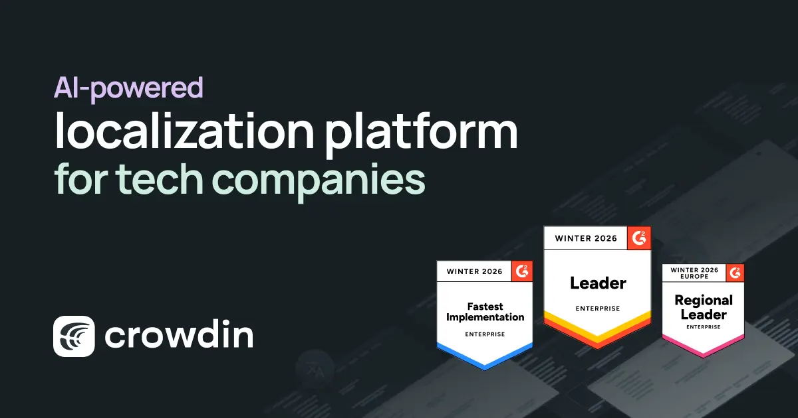
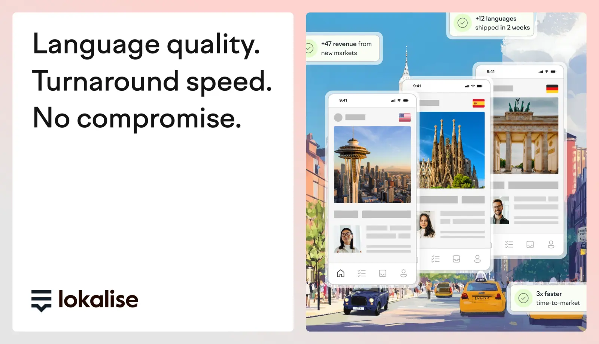
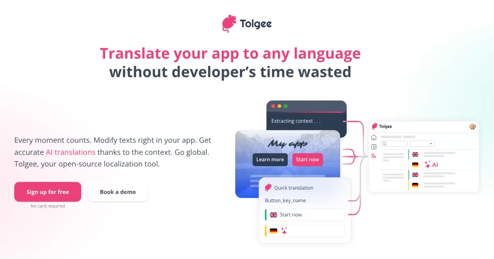

The Localization Line · React i18n · 2026
Ship a string, five stops down the line.
The i18n library you pick decides your extraction model and file format. The TMS you pair it with decides your actual workflow. This is the route map — every service line, and the platform it terminates at.
Board by team, not by benchmark
Choose the pairing, not the library alone. Read the condition on the left, ride the line, arrive at the platform.
Five stops, and where each library sits
Every workflow is the same trunk line — author → extract → hand off to TMS → translate → sync back → ship. Libraries differ mostly at stop 02. The TMS is usually implied by the format, not freely chosen.
Extraction — three philosophies stop 02
- CLI extract-and-compile. Lingui (lingui extract → PO, lingui compile → JS) and FormatJS (@formatjs/cli → JSON, babel/AST auto-IDs). Lingui's extract merges so translations survive re-runs [4]; FormatJS is "powerful but fiddly" [3].
- No extraction — you own the key files. react-i18next, next-intl (classic), typesafe-i18n. You hand-author JSON; extraction is a TMS or lint concern. i18next's i18next-cli can instrument and extract, but it's Locize-oriented [2].
- Compiler / build-time. Paraglide compiles messages from the .inlang project into tree-shakable functions [9]; next-intl's experimental useExtracted (v4.5, Next 16+) extracts during next dev/build via a Turbopack/Webpack loader — no key naming, no CLI [12][13].
File format decides interoperability stop 03 hand-off
The format is the coupling — it's what the TMS station platform is built to receive.
The tight couplings, drawn as track
The couplings are the story: i18next↔Locize, Lingui↔PO↔Crowdin, Paraglide↔inlang/Fink. Each line runs its own way from code to shipped locale.
Locize is the official TMS, built by the i18next team — the only one with a runtime backend (i18next-locize-backend) and native locize-sync / locize-download / locize-migrate commands [1]. The 2026 i18next-cli chains instrument → extract → Locize setup → AI auto-translate in one run, collapsing the old export/email/import loop [2]. Eleven other TMSes integrate, none as deeply.
Lingui defaults to PO, and Crowdin consumes PO directly (plus a dedicated Lingui String Exporter app [7]). Canonical CI task: lingui extract && crowdin upload, compiled JS catalogs at runtime [6]. Auto-generated IDs need the X-Crowdin-SourceKey PO header so Crowdin knows where source strings live [3].

Paraglide is the compiler; the .inlang project is the shared source of truth; Fink is the web CAT editor that lets translators edit messages in the git repo without cloning or touching git [10]. The ecosystem also ships Sherlock (VS Code inline edit/lint/extract), the inlang CLI (CI machine-translation + validation, plugins for JSON/i18next/next-intl), and Ninja i18n (a GitHub lint action) [21]. inlang and i18next can even interoperate [28].
FormatJS's ICU is the most complete, and its CLI emits vendor-specific formats directly — built-in formatters for crowdin, lokalise, smartling, transifex [16], plus Phrase Strings for the extract-translate-import cycle [29]. The extract-and-compile pipeline is capable but "fiddly" [3].

By design. You get parameter-level type checking and codegen; you build the TMS pipeline yourself or skip a TMS entirely — extraction and distribution are "left to you" [14]. Adopt a real workflow the day you hire a translator.
What changed at the platform this year
Two shifts define the 2026 line: in-context editing that reaches production, and AI/MCP moving the smarts to the TMS side.
Tolgee: Alt-click the running app
Hold Alt/Option + click any rendered string in the running app to open an edit dialog — works even in production, with one-click Canvas-API screenshots for translator context [17].
Open-source and self-hostable, native React SDK, works standalone against static JSON with no server. You can bolt it onto an existing i18next/react-intl setup [27].

The smarts moved TMS-side
MT/AI is a TMS feature, not a library feature — the library only decides how easily keys reach the platform.
- MCP servers everywhere. Official Model Context Protocol servers ship for Locize, Crowdin, Lokalise, Phrase, POEditor, Tolgee, SimpleLocalize — agents add keys, trigger MT, check progress without leaving the editor [19][20].
- BYOK LLM keys. Locize (OpenAI/Gemini/Mistral/DeepL), Crowdin (OpenAI/Gemini/Azure), POEditor and Tolgee (incl. Anthropic), SimpleLocalize [19].
- Library-side exception: inlang's CLI runs machine translation as a CI step against the .inlang project [8].
Two CI gates, cheap to expensive
Wire both on day one — they're library-agnostic and the single biggest quality lever. Version-control-native TMSes (Weblate) fold both into one git round-trip.
Structural parity lint
Compare key sets across locale files; fail the build if a key exists in en but not de.
~5 min to configure · runs in <1s [23]
TMS sync gate
Push new source strings to the TMS, pull completed translations back — usually on merge to main.
Crowdin GitHub app auto-PRs · Lingui crowdin upload · Locize locize-sync
Workflow per library
The full timetable — extraction, tightest TMS coupling, in-context editing, and CI story, one row per service line.
| Library | Extraction | TMS (tightest) | In-context | CI story |
|---|---|---|---|---|
| react-i18next⭐ 10k | ✗ hand-authored JSON; i18next-cli (Locize) [2] | Locize (official) — runtime backend + native CLI [1] | ✗ via TMS only | locize-sync; key-diff lint |
| react-intl / FormatJS⭐ 14.7k | ✓ @formatjs/cli, auto-ID via babel/AST [15] | vendor formatters: Crowdin/Lokalise/Smartling/Transifex/Phrase [16] | ✗ | extract + compile; ⚠ "fiddly" [3] |
| Lingui⭐ 5.8k | ✓ lingui extract → PO, merges [4] | Crowdin (PO + exporter app) [7] | ✗ | extract && crowdin upload && compile |
| next-intl⭐ 4.3k | ✗ classic; ✓ experimental useExtracted [12] | Crowdin — CLI/GitHub app/webhooks/OTA [11] | ✗ via TMS only | Crowdin GitHub app auto-PRs |
| Paraglide⭐ 567 | ✓ compiler from .inlang [9] | inlang / Fink (open TMS) [10] | in-editor (Sherlock) [8] | inlang CLI: MT + validate + Ninja [21] |
| typesafe-i18n⭐ 2.5k | codegen in dev; no string extraction [14] | ✗ none — DIY | ✗ | type-check only; roll your own |
| + Tolgee SDK⭐ 4k (React) | works on static JSON standalone [3] | Tolgee platform (OSS, self-host) [27] | ✓ Alt-click, incl. production [17] | MT (DeepL/Google/AWS) + MCP [18] |
Connecting lines — the other four angles
This page is the translation-pipeline stop on the Decision framework: which React i18n library to adopt in 2026 expedition. Change here for:
The Core Library Head-to-Head
react-i18next the safe default; next-intl owns the App Router; Paraglide & Lingui the compile-time challengers.
surveyMessage format, pluralization & ICU
ICU-first vs interpolation-first vs MF2-inspired — how each authors plurals, gender and Intl formatting.
surveyType safety, extraction & tooling
Compile-first libraries and next-intl give type safety for free; i18next & react-intl bolt it on.
surveyFramework & runtime fit
next-intl or Lingui for the App Router; Paraglide or react-i18next for a Vite SPA.